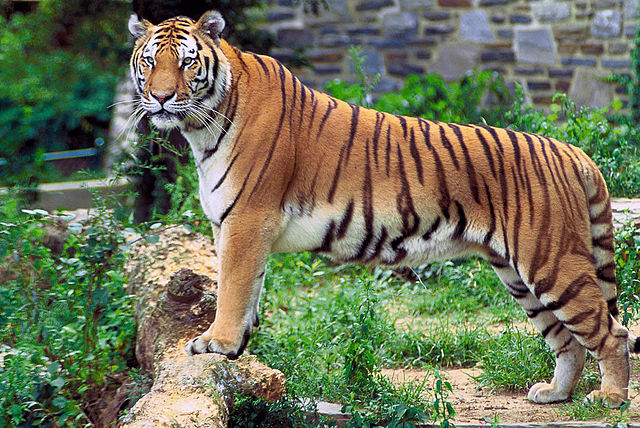

The tiger was first scientifically described in 1758. It once ranged widely from the Eastern Anatolia Region in the west to the Amur River basin in the east, and in the south from the foothills of the Himalayas to Bali in the Sunda Islands. Since the early 20th century, tiger populations have lost at least 93% of their historic range and have been extirpated from Western and Central Asia, the islands of Java and Bali, and in large areas of Southeast and South Asia and China
The tiger's closest living relatives were previously thought to be the Panthera species lion, leopard and jaguar. Results of genetic analysis indicate that about 2.88 million years ago,the tiger and the snow leopard lineages diverged from the other Panthera species, and that both may be more closely related to each other than to the lion, leopard and jaguar. The geographic origin of the Panthera is most likely northern Central Asia. The tiger-snow leopard lineage dispersed in Southeast Asia during the Miocene.